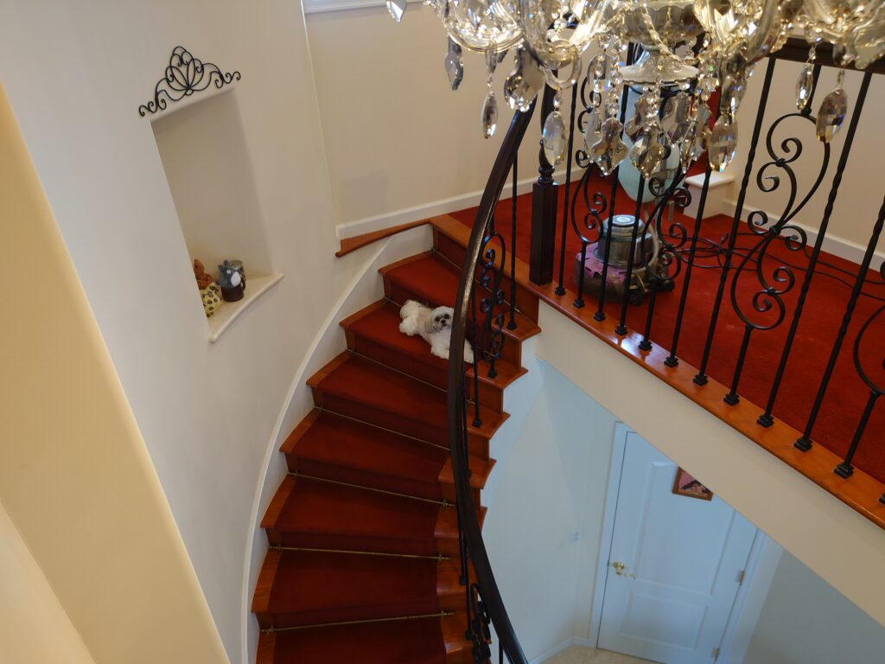
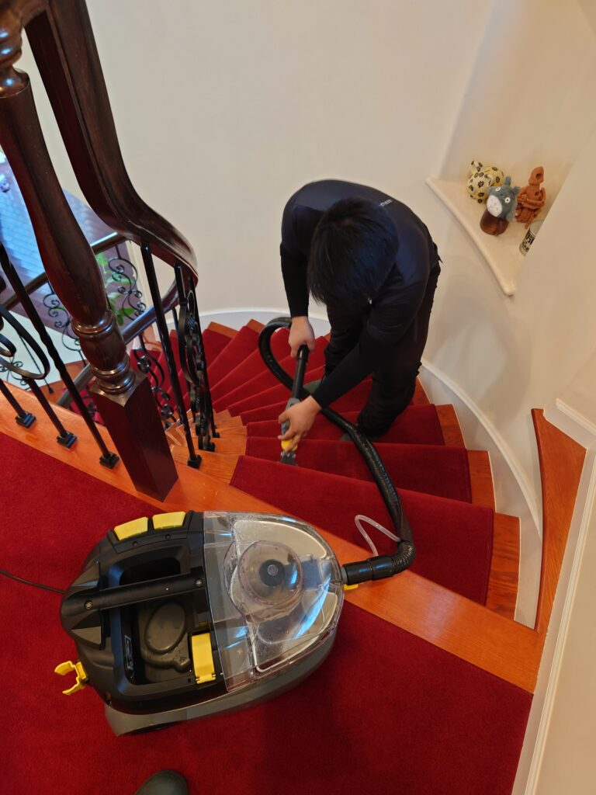
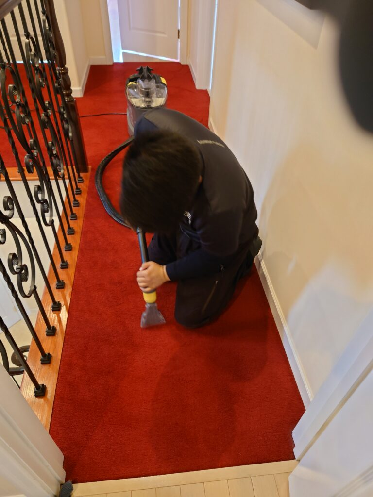
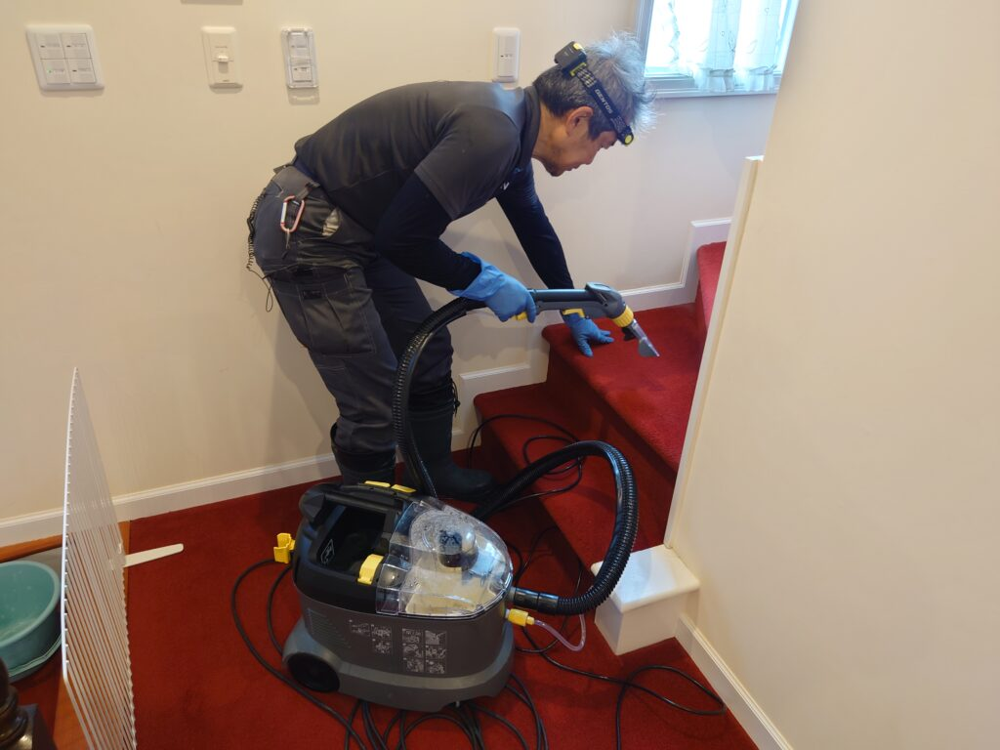
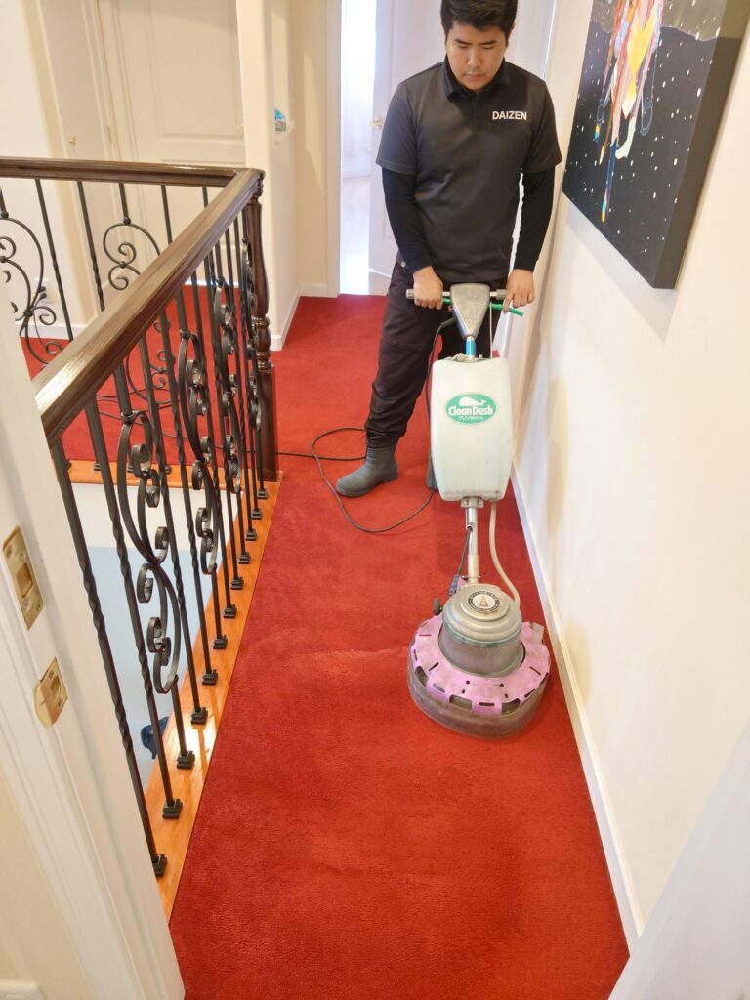
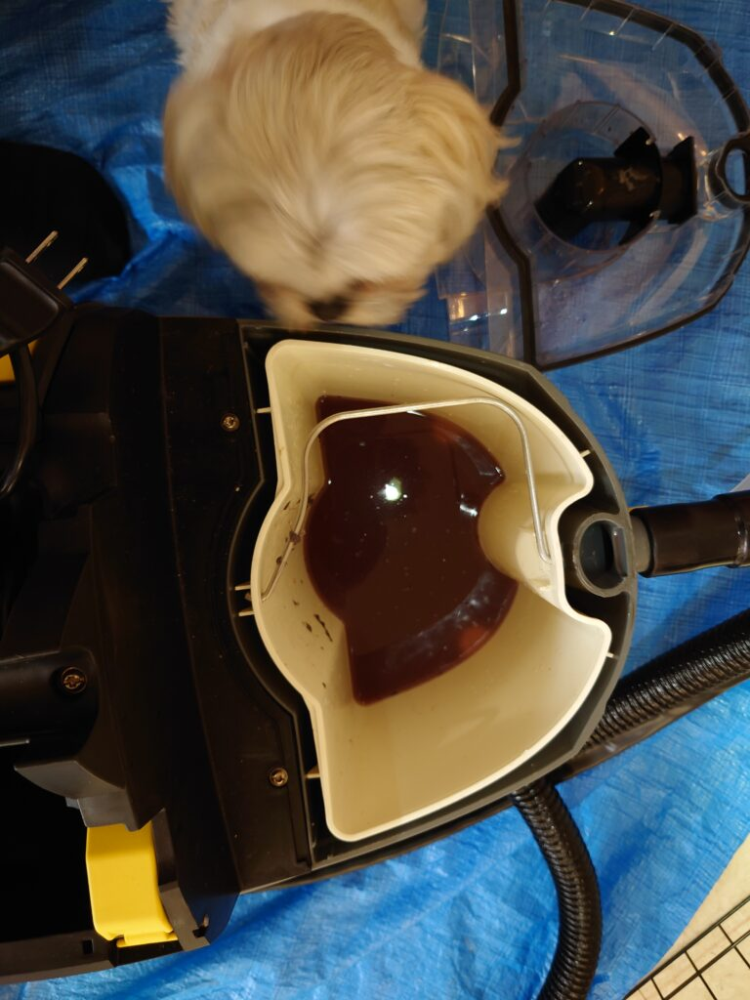
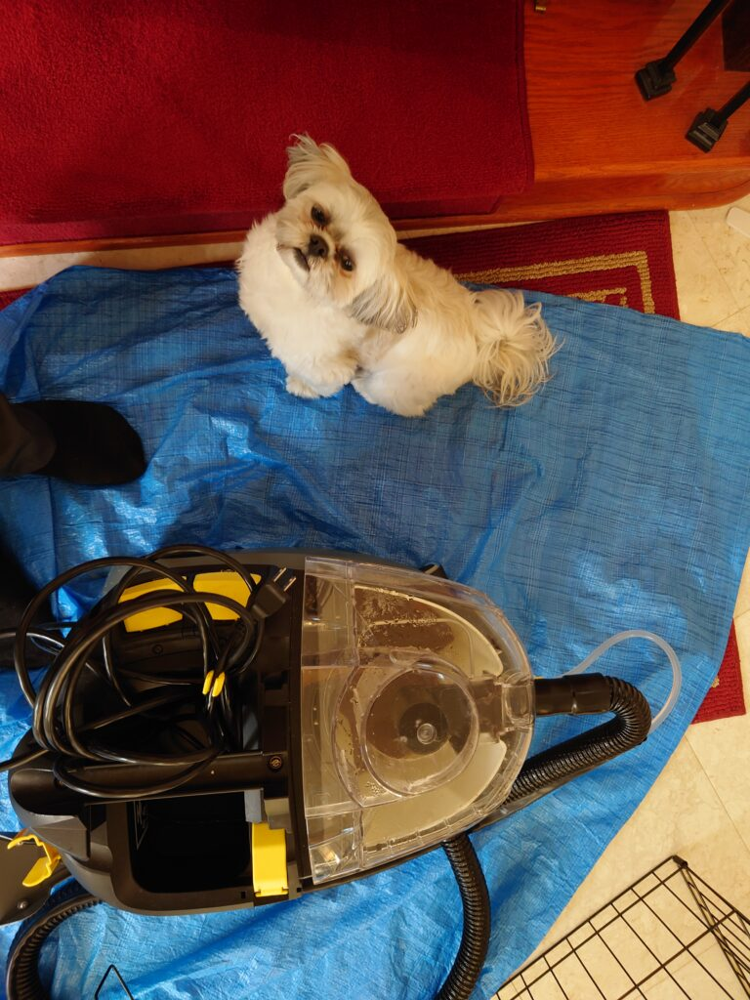
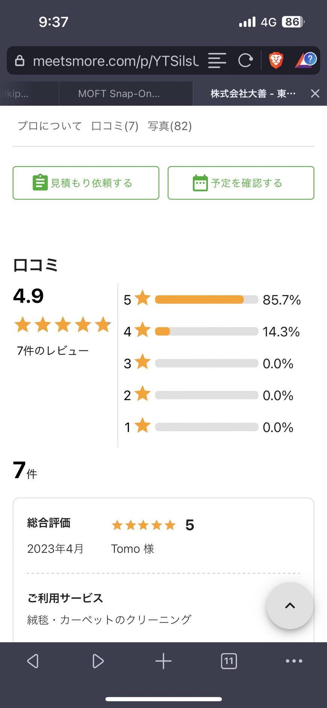
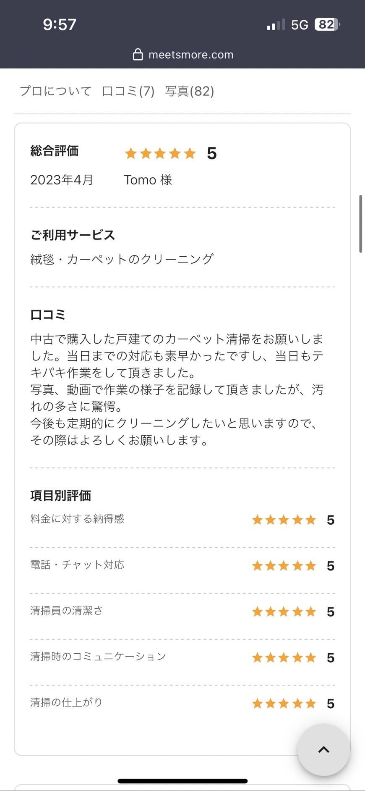

千葉美浜区一戸建ての美しいご自宅、赤い色が鮮やかなカーペットの洗浄クリーニングをしました!








千葉美浜区O様宅の美しい赤いカーペット、階段カーペットの専用リンサー機器による洗浄クリーニングをしました。
O様宅のカーペットは、とても美味しい赤い色のカーペットです。写真にも写っております、愛らしい愛犬チコちゃんが、カーペットを少し汚してしまったとのことで、カーペット洗浄クリーニングを実施しました。美しい赤い色の風合いが蘇る様に、ドイツ製専用薬剤（汚れをカプセル化して閉じ込め除去する）を用いて、カーペット専用ポリッシャー洗浄を施し、同じくドイツ製最新鋭カーペットリンサー機器で、カプセル化した汚れを根こそぎ強力洗浄してバキューム吸引してクリーニングします。見る見る汚れが取れて、鮮やかな赤いカーペットがクリーニング完了しました!ぜひDAIZENプロフェッショナルメソッドを用いたカーペット洗浄クリーニングをお試し下さい！そ

